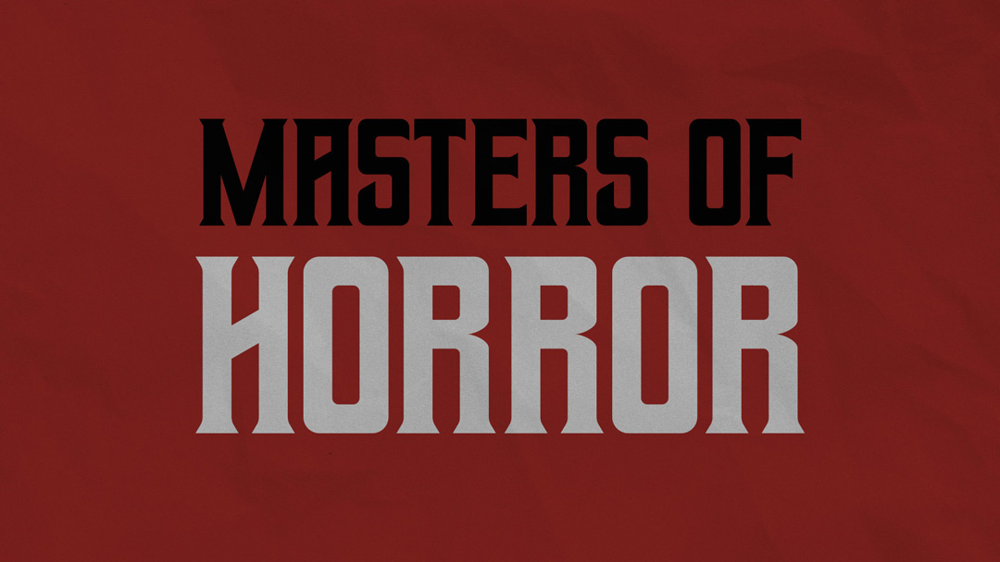
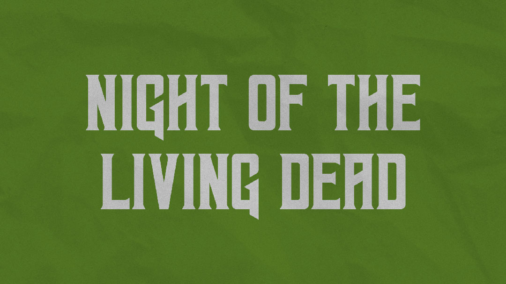
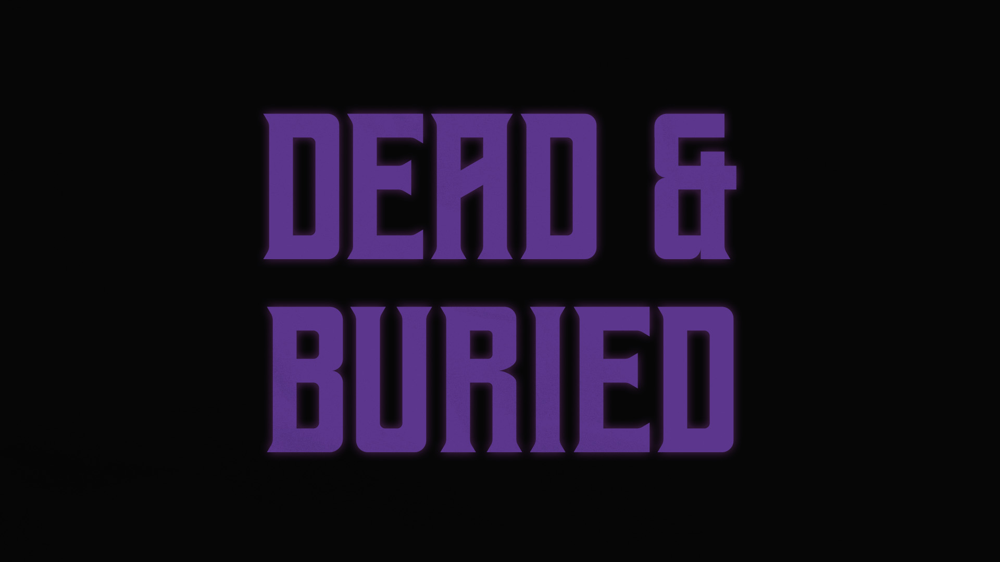

← Return to Homepage — Geizer

Geizer — A Free Font
This font was inspired by horror novels and heavy metal. It was named after Geezer Butler of Black Sabbath. But everyone (understandably) pronounces it "geyser." If I could do it over again, I would name it something else.
This project is probably my most popular work, with more than 300,000 downloads from Dafont. I've had the pleasure of seeing it used in the wild many times, and I always get a kick out of it.



Download
Font Details
Released: 2018
Style: Copperplate / Gothic
Note: Capital letters only
References
Usage Rights
This is a free font.
Commercial use is allowed.
Attribution is not required.